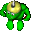
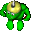
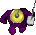
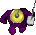
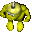
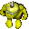
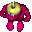
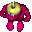

are always this color.
are always this color.Enemy Gruntz are always some other color in a Questz puzzle.
In Battlez puzzlez, your opponents are always Red, Green or Blue, regardless of their toolz.
 0 Orange - default (player's) color
0 Orange - default (player's) color 1 - Green (1-Dumb Chaser )
1 - Green (1-Dumb Chaser ) 2 - Blue (9-Gauntletz Grunt
2 - Blue (9-Gauntletz Grunt  )
) 3 - Red (7-Suicide Bomber
3 - Red (7-Suicide Bomber  , impossible in Questz ... leavez no Goo behind)
, impossible in Questz ... leavez no Goo behind) 4 - Purple (4-Defender )
4 - Purple (4-Defender ) 5 - Yellow (3-Hit And Runner )
5 - Yellow (3-Hit And Runner ) 6 - Hot Pink (6-Object Guard )
6 - Hot Pink (6-Object Guard ) 7 - Black (13-Tool Thief
7 - Black (13-Tool Thief  )
) 8 - Dark Blue (8-BrickLayer
8 - Dark Blue (8-BrickLayer  )
) 9 - Dark Green (2-Smart Chaser
9 - Dark Green (2-Smart Chaser  )
) 10 - Turquoise (11-Digger
10 - Turquoise (11-Digger  )
) 11 - Dark Red (12-TimeBomber
11 - Dark Red (12-TimeBomber  )
) 12 - Pink (5-Post Guard
12 - Pink (5-Post Guard  )
) 13 - Dark Yellow there is no Grunt of this color
13 - Dark Yellow there is no Grunt of this color 14 - Grey there is no Grunt of this color
14 - Grey there is no Grunt of this color 15 - Cyan (GooSucker
15 - Cyan (GooSucker  )
) 16 - White (Toyer
16 - White (Toyer  )
) ?? - Olive Magic Wand Grunt
?? - Olive Magic Wand Grunt  and Scroller Grunt
and Scroller Grunt 
1 - Green Team (Battlez)
2 - Blue Team (Battlez)
3 - Red Team (Battlez)
10 (example 1) ... only 10% of the Goo Well is filled
40 (example 2) ... 40% of the Goo Well is filled
70 (example 3) ... 70% of the Goo Well is filled
220 (example 4) ... the Goo Well is filled ... once (the rest is lost)
Sucking up examplez 2 and 3 resultz in one Grunt, and 10% is lost.